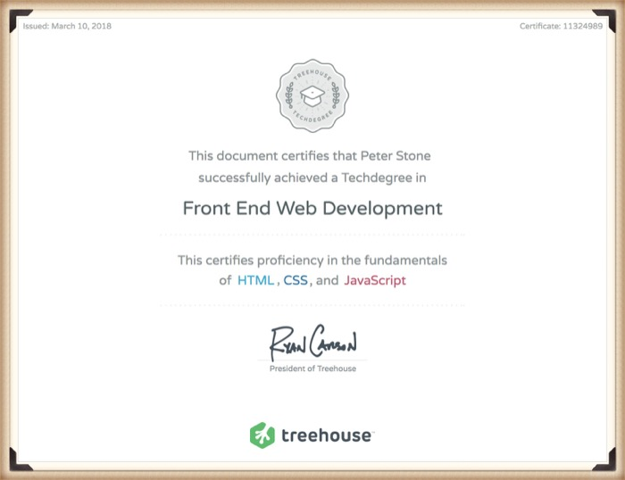

Credentials
Technical Skills Summary
Languages: HTML, CSS, SASS/SCSS/LESS, JavaScript, jQuery, AJAX, React
Tools: Git and GitHub
Operating Systems: Windows, OS X
Other Skills: CSS Animations, Responsive Design, SVG, Third Party APIs
Portfolio and Highlighted Projects
Portfolio Site
Custom coded a portfolio including over 20 projects.
Ian Forster Music
Custom built a website for a local musician. HTML, CSS and Javascript
Mountain West
Designed and developed a website for a fictional company utilizing HTML forms, CSS, JavaScript, and connecting to a Random User API
Cornerstone Church
Designed and developed a custom mockup of a church website using HTML, CSS and Javascript.